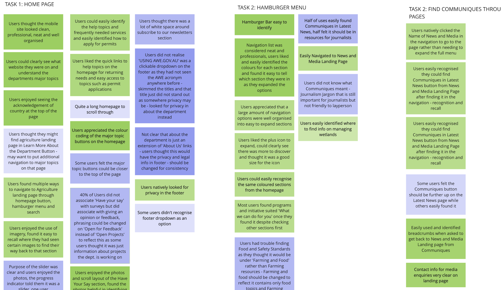

Highlights
Low on time and want to see what we found were some of the most interesting parts of the case study?
Jump to the Best Bits

Improved Navigation
Due to the large amount of merged information and difficulty users had navigating the original site, making a comprehensive navigation system was our primary concern
Go to Navigation
Responsive Design
Our goal was to create a seamless experience between the desktop and mobile versions of this site so the transition was natural and easy for the user to find content across different devices
Go to Responsive Design

Measuring Success
See how our feedback from usbaility testing informed and evolved our design process over time to improve the user experience.
Go to Usability Testing
Clickable Prototypes
Our clickable prototypes allow your to explore the imroved navigation, news and media pages and experience the new homepage design.
Go to Prototypes